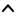

| Top |  |
GObject ╰── GInitiallyUnowned ╰── GstObject ╰── GstElement ╰── GstRTPBaseDepayload ╰── GstRtpL24Depay
Extract raw audio from RTP packets according to RFC 3190, section 4. For detailed information see: http://www.rfc-editor.org/rfc/rfc3190.txt
1 |
gst-launch-1.0 udpsrc caps='application/x-rtp, media=(string)audio, clock-rate=(int)44100, encoding-name=(string)L24, encoding-params=(string)1, channels=(int)1, payload=(int)96' ! rtpL24depay ! pulsesink |
plugin |
rtp |
author |
Zeeshan Ali <zak147@yahoo.com>,Wim Taymans <wim.taymans@gmail.com>,David Holroyd <dave@badgers-in-foil.co.uk> |
class |
Codec/Depayloader/Network/RTP |
name |
sink |
direction |
sink |
presence |
always |
details |
application/x-rtp, media=(string)audio, clock-rate=(int)[ 1, 2147483647 ], encoding-name=(string)L24 |
name |
src |
direction |
source |
presence |
always |
details |
audio/x-raw, format=(string)S24BE, layout=(string)interleaved, rate=(int)[ 1, 2147483647 ], channels=(int)[ 1, 2147483647 ] |